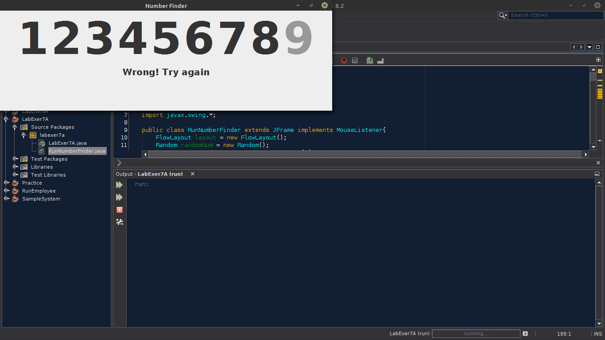
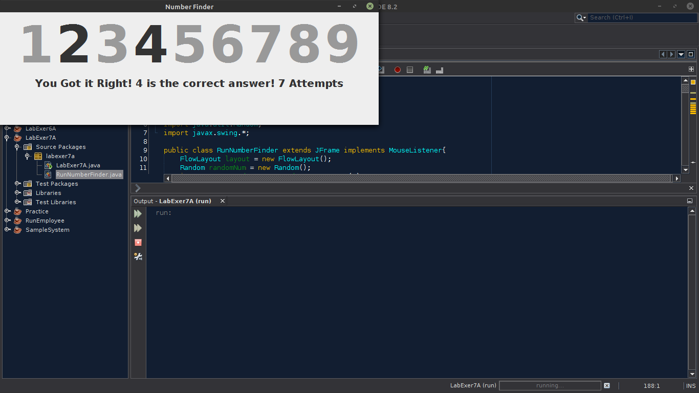
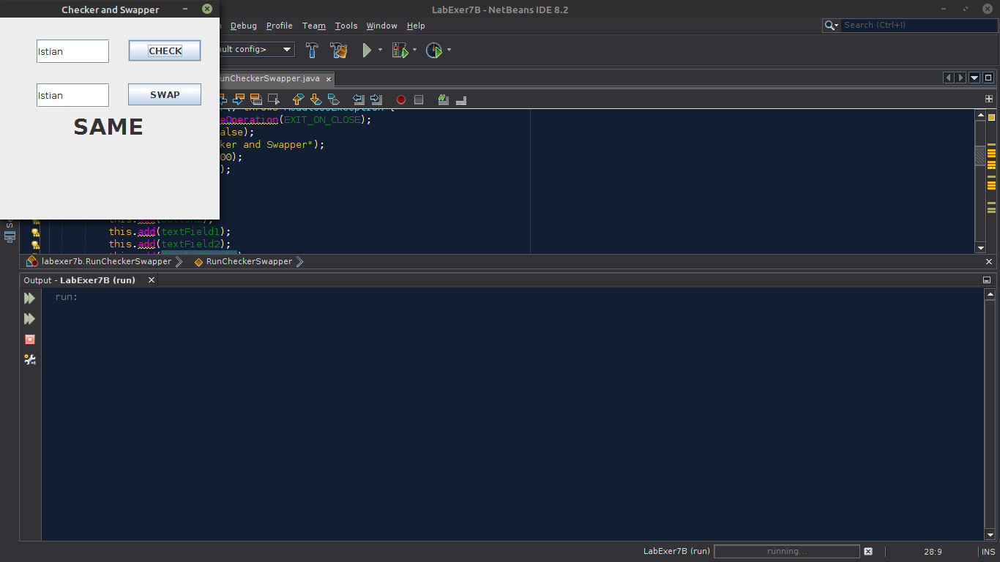
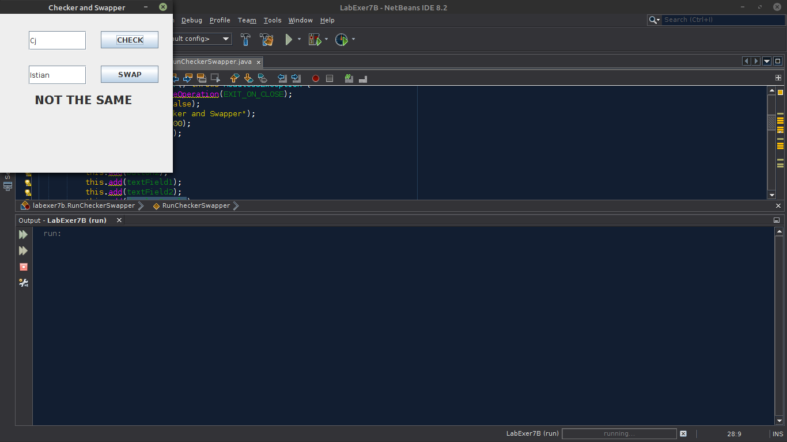
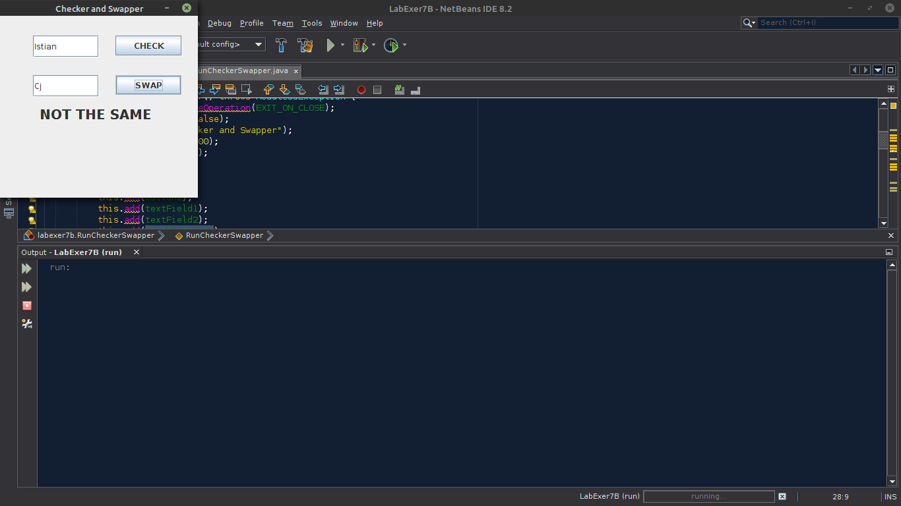
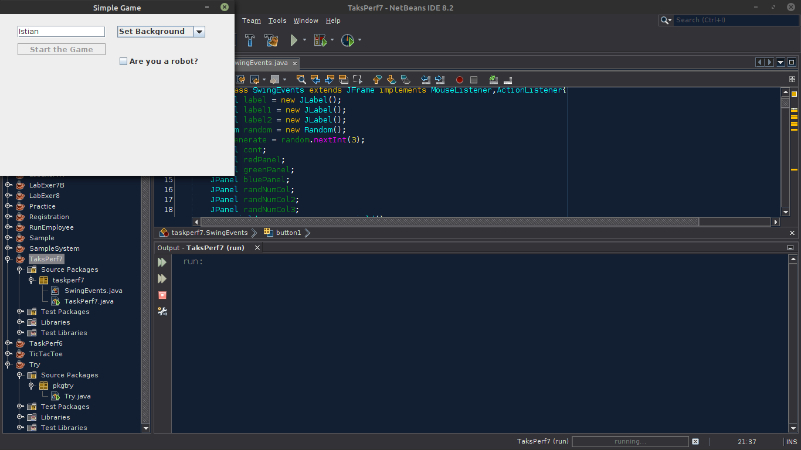
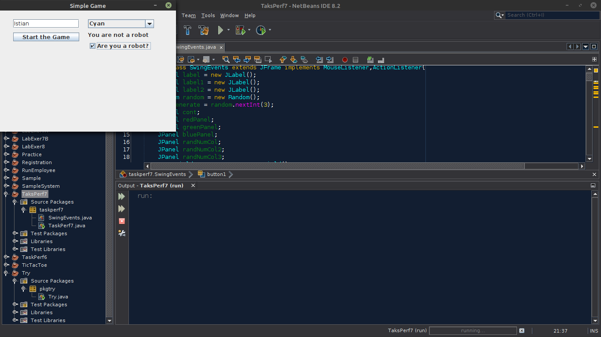
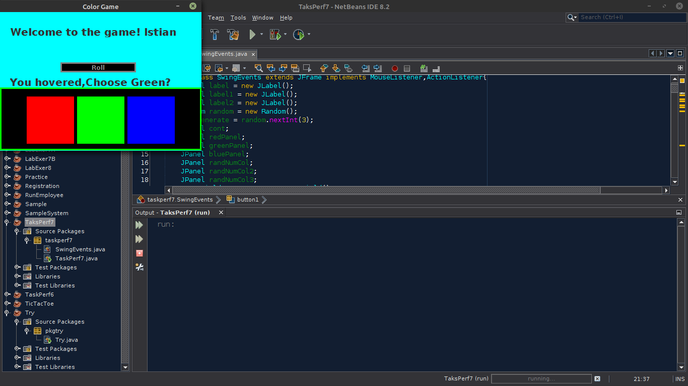
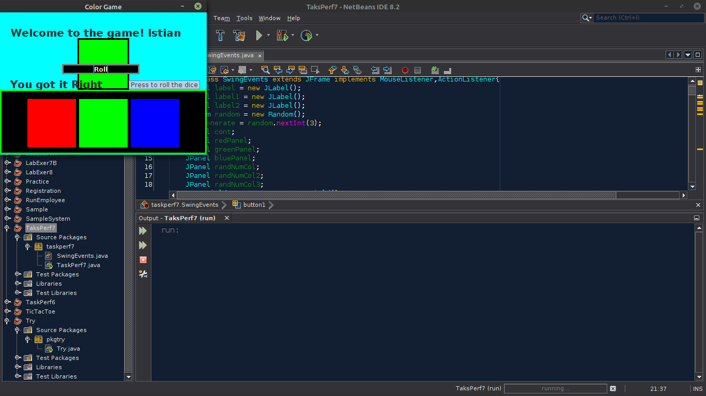
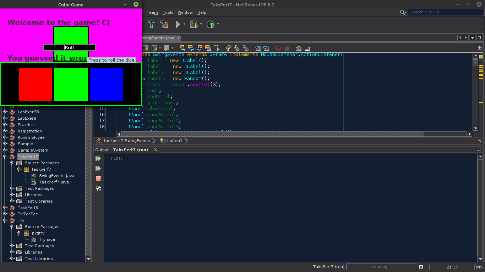

This webpage allows me to document some of my non-web-based applications that I created for my school activities. These programs were either created with Java, C#, or Python. Doing school activities and tasks where I'm going to create a program or application has allowed me to learn more about coding. Experience or lots of coding exposure is needed for a person to learn coding. I present to you screenshots of the outputs of my school tasks here on my website and the source codes of my projects that you can run when you have a Replit account or reuse for your own apps.
Welcome
Number Finder
Programming Languge: JavaThis desktop app is a simple game that allows users to guess a number within 1 to 9. The player has unlimited attempts until they have guessed the right number. You will just have to find the right number that is being asked to be predicted randomly.
You can run or try this on my Replit
(Note: You should have a replit accout to fork and run this) 
Checker Swapper
Programming Languge: JavaA simple desktop app that checks if both strings or texts inside the text field are the same or not. It also has a button that swaps the text from text boxes 1 to 2 and 2 to 1 and can also be checked to see if they are equal. The text label prints that the strings are the same if the system detects that both fields have the same values.
You can run or try this on my Replit
(Note: You should have a replit accout to fork and run this)  
Color Game
Programming Languge: JavaI created this somewhat unfinished and messy desktop app for fun. It is a color game similar to a public fair or carnival that was enjoyed by Filipinos. The difference is that the app's output is only one color, and there are only three (3) choices of colors. Not like the traditional three (3) outputs or results and six (6) colors to be chosen. I added a bit of a login frame that allows the player to type their name and choose a background color according to their liking before a player plays or gets in, for him or her to be greeted with a welcome.
You can run or try this on my Replit
(Note: You should have a replit accout to fork and run this)    